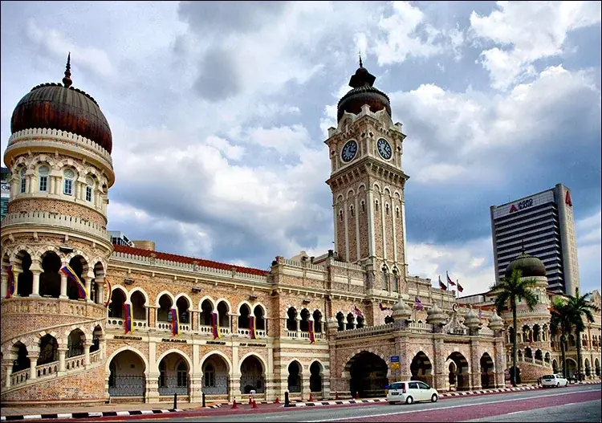
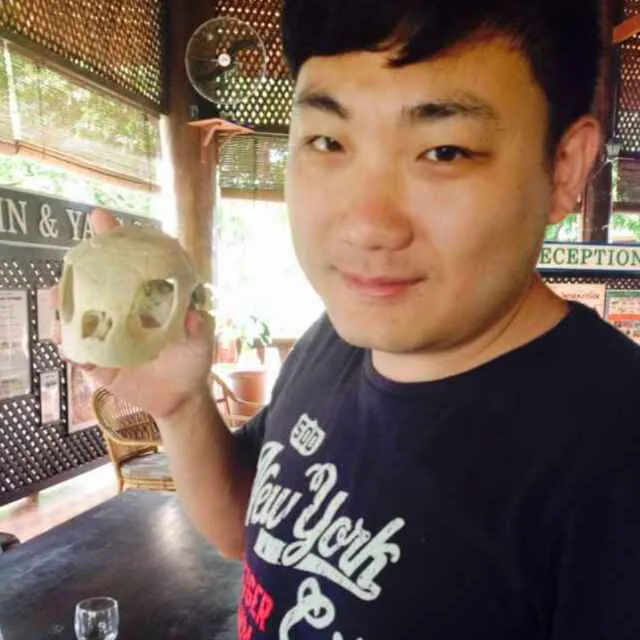

吉隆坡：一座由华人矿工"挖"出来的城市
Kuala Lumpur — a city dug out by Chinese tin miners.

2014 年，我第一次踏上马来西亚的土地，落地就是吉隆坡。
那时候对这个国家几乎没什么概念，一切都是新鲜的。坐上那种双层的 Hop-On Hop-Off 观光巴士，绕着城市转——这是我对吉隆坡最深的第一印象之一：不用自己规划路线，站站都能上下车，一天下来把整座城市的骨架看了个大概。今天回头看，这种巴士本身也算是一种"轻量级考察工具"，对第一次到一个陌生城市的人来说，效率很高。
博物馆里，第一次系统了解这个国家
我去了国家博物馆，第一次系统地了解马来西亚的历史。博物馆是米南加保风格的传统马来建筑，入口两侧是两幅巨型壁画——一幅讲手工艺，一幅讲从 12 世纪印度教 / 佛教时期一路到 1957 年独立的历史脉络。站在那两幅壁画前，是我第一次对"马来西亚"这个国家有了一个时间轴式的认识，而不只是一个地理名词。
.jpg)
.jpg)
这座城市，最早是华人"挖"出来的
后来才知道，吉隆坡（Kuala Lumpur）在马来语里的意思是"泥泞的河口"。19 世纪中叶，雪兰莪王族拉查阿都拉把巴生谷一带开放给锡矿开采，吸引了大批中国矿工前来挖锡矿，这座城市就是从矿工聚居地慢慢发展起来的。英国殖民政府后来还委任了一位华人——甲必丹叶亚来——来管理当地华人事务。
也就是说，吉隆坡从一开始就不是一座"纯马来"或"纯殖民"的城市，它是华人矿工挖出来的商业聚落，后来才长成了一个国家的首都。这条线索，跟今天中国企业出海东南亚，其实是同一个母题隔了一百多年的两个版本——那时候是矿工带着劳力出海，今天是企业带着资本、技术和品牌出海。
.jpg)

独立广场周边：英殖民时代的"权力景观"
跑马场、老国会这些地标，大概率是围绕独立广场（Dataran Merdeka）这一片——苏丹阿都沙末大厦、雪兰莪皇家俱乐部（有自己的板球场 / 跑马传统）、国家历史博物馆都聚在这一带，是英国殖民时期的行政与社交核心区，摩尔式圆顶配哥特式拱门。1957 年马来西亚独立，第一面国旗就是在这个广场升起的。
小印度：又一层"移民建城"的证据
十五碑（Brickfields），也就是吉隆坡的小印度，是巴生谷地区印度裔的主要聚居地，有上百年历史的印度庙宇、修道院、金饰店。跟华人矿工聚落一样，这也是移民社群自己"长"出来的城市肌理，不是规划出来的。
商场地下一层：快过年的吉隆坡，中国年味比想象中浓
最让我意外的是一个商场——具体名字忘了，但记得它有一层是下沉式的设计。去的时候快过年了，整个商场全是灯笼、对联、年货，年味浓得完全不像在"国外"。
这是我人生第一次真切体会到：华人在海外，不是零散地过年，而是把整套年俗完整地"搬"到了另一个国家，灯笼、对联、年货一样不少，甚至因为聚集在一起，年味比国内一些城市还浓。对当时第一次出国的我来说，这个冲击不小——它跟博物馆里、跟华人矿工建城的历史线索，其实是同一件事的不同切面：这个国家的商业和文化肌理里，本来就深深嵌着华人社群的存在。
华人在海外从不只是零散地生活，他们会把整套年俗完整地搬过去——这种复制能力，本身就是一种被低估的商业基础设施。
——董立鑫 海鑫汇创始人兼执行总裁，新加坡世贸秘书长兼首席运营官
这一站留下的判断
德国那几站看到的是"制造业体系有多深"，吉隆坡这一站看到的是另一件事：一座城市、一个市场的商业底色，往往是由最早那批"外来的人"打下来的。华人矿工、英国殖民者、印度劳工，各自在这座城市留下了自己的聚落和产业，最后拼成了今天这个多元、混杂但很有活力的吉隆坡。而那个挂满灯笼对联的商场，则是这条历史线索在 2014 年、在我第一次踏足这个国家时，最直接的一次现场证明。
后来我又去过马来西亚好几次，但"第一次"这种新鲜感，只有这一趟才有。
本文整理自董立鑫（Bruce Dong）海外产业考察记录，首发于海鑫汇。